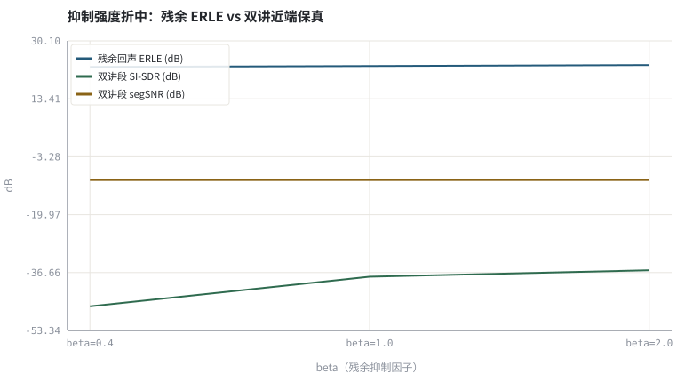
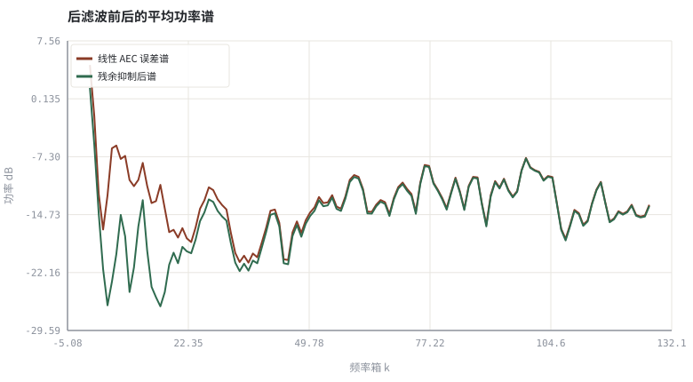

第 11 章残余回声抑制与 WebRTC AEC3 结构
线性滤波器解释不了扬声器削波，最后一段回声要靠功率谱估计来收。
本章位置：第 09 章 · AEC 总体结构：参考信号、线性滤波与残余抑制 给出三级 AEC、第 10 章 · 用 NLMS 实现一个可验证的 AEC 给出可验证的线性实现，本章补上非线性残余与 AEC3 结构；第 12 章 · 谱减、过减因子与音乐噪声 起转入 ANS，第 24 章 · 神经 AEC 与回声/噪声联合抑制 会把这段后滤波换成神经模型。
线性 AEC 是编译器能静态分析的那部分，残余抑制是运行时兜底的 rate limiter：模板来自预测谱，增益是逐 bin 的限流阀，β 是阈值松紧。阈值调得太狠，正常流量（近端语音）也会被限掉。
- 能说明非线性回声为何让线性 AEC 留下不可消除的残余。
- 能写出基于线性预测谱的残余回声功率估计与 Wiener 型后滤波增益。
- 能解释 AEC3 中主/阴影滤波器、延迟估计与残余回声估计的分工。
- 能运行实验，量化抑制强度 β 与残余 ERLE、双讲保真度的折中。
§知识点地图
每个知识点都配了 1～2 个扩展学习链接；本章完整资源清单见 扩展学习。
| # | 知识点 | 扩展学习 | 状态 |
|---|---|---|---|
| 1 | 非线性回声与削波 | Echo cancellation ↗ · WebRTC AEC3 模块 ↗ | 正文已覆盖 |
| 2 | 残余回声功率谱 | Echo cancellation ↗ · WebRTC AEC3 模块 ↗ | 正文已覆盖 |
| 3 | 泄漏系数 γ | WebRTC AEC3 模块 ↗ · Microsoft AEC Challenge ↗ | 正文已覆盖 |
| 4 | Wiener 型后滤波 | WebRTC AEC3 模块 ↗ · Microsoft AEC Challenge ↗ | 正文已覆盖 |
| 5 | AEC3 主/阴影滤波器 | Echo cancellation ↗ · ITU-T G.168 ↗ | 正文已覆盖 |
| 6 | 延迟估计与缓冲对齐 | RFC 3550 RTP ↗ · MDN Web Audio API ↗ | 正文已覆盖 |
| 7 | 双讲透明度 | ITU-T G.168 ↗ · Microsoft AEC Challenge ↗ | 正文已覆盖 |
| 8 | 过抑制与语音失真 | WebRTC AEC3 模块 ↗ · Microsoft AEC Challenge ↗ | 正文已覆盖 |
§11.1线性模型的天花板
e_lin[n] = y[n] − ŵ*x[n] ≈ (h*x)[n] − ŵ*x[n] + f_nl(x[n]) + d[n] + v[n]
f_nl 是扬声器饱和、外壳振动、编解码削波引入的非线性项，它不能写成 x 的线性卷积，所以再长的自适应滤波器也无解。本章实验用 tanh(1.8·u) 人为制造这种饱和，让线性级刻意留下一段可测量的残余，再交给后滤波。
| 残余来源 | 与 x 的关系 | 线性 AEC 能否消除 | 对策 |
|---|---|---|---|
| 混响尾超出 L | 线性但欠建模 | 加大 L 可缓解 | 分块 MDF 覆盖更长尾 |
| 路径突变瞬间 | 线性但时变 | 需重收敛时间 | 阴影滤波器 + 快速重估 |
| 扬声器削波 | 非线性 f_nl(x) | 不能 | 残余功率估计 + 后滤波 |
| 时钟漂移 | 延迟缓变 | 会周期性塌陷 | 延迟估计 + 重采样 |
§11.2AEC3 的四块拼图
- 延迟估计：在参考缓冲里找与 y 最相关的对齐位置，先把 x 与 y 放到同一时间轴。
- 主滤波器 + 阴影滤波器：阴影滤波器持续自由更新、不受双讲保护，只有稳定优于主滤波器才替换，兼顾快速重收敛与误判鲁棒性。
- 残余回声估计：用线性预测谱 Ŷ 与误差谱 E 的相干性，估出每个 bin 还漏了多少回声功率。
- 残余抑制器：把估计功率转成逐 bin 增益 G，作用在线性误差上，并与噪声抑制、AGC 串成完整 3A（第 16 章 · 3A 级联顺序与模块间相互干扰）。
P̂_res[k,t] = γ·|Ŷ[k,t]|² ，G[k,t] = max(G_floor, 1 − β·P̂_res[k,t] / P_e[k,t])
Ŷ 已经过 ŵ 的整形，刻度与真实回声能量一致；直接用 |X|² 会把尚未被线性级消掉的那部分也算进去，导致过抑制。
§11.3一条永远存在的折中曲线
β ↑ ⇒ 残余 ERLE ↑ 但 双讲段 SI-SDR ↓ （近端语音被当成残余一起压掉）
实验扫描 β ∈ {0.4, 1.0, 2.0}，同时打印残余 ERLE、双讲段 segSNR 与 SI-SDR。工程上不能用『把回声压到零』做目标函数，必须把双讲透明度作为并列约束；这正是 第 03 章 · 怎么算「变好了」：客观指标、尺度与主观听测 要求同时报失真类与主观/无参考指标的原因。
后滤波的模板是回声预测谱 Ŷ，不是噪声谱 λ_n。两者混淆会在远端静音时把近端语音一起衰减——降噪任务属于 第 12 章 · 谱减、过减因子与音乐噪声～第 13 章 · Wiener 滤波、先验 SNR 与 MMSE-STSA。
§Python 实验
实验 11-1 · 非线性回声下的残余抑制与 β 折中扫描
#!/usr/bin/env python3
# -*- coding: utf-8 -*-
"""用 tanh 制造非线性回声，跑线性 NLMS 后做逐 bin 后滤波，打印 β 扫描下的残余 ERLE 与双讲保真度。
全部语音 / 噪声 / 房间冲激响应均为代码合成信号，仅用于教学演示机制与量级。
"""
from __future__ import annotations
import math
import pathlib
import random
import statistics
import sys
import time
_here = pathlib.Path(__file__).resolve()
for _p in _here.parents:
if (_p / "tools" / "dsp.py").exists():
sys.path.insert(0, str(_p / "tools"))
break
from dsp import (SAMPLE_RATE, fft, hann, stft, istft, magnitude_db, spectrum,
white_noise, tone, chirp, synthetic_speech, rir, convolve,
fft_convolve, delay, clip, normalize_peak, rms, rolling_rms,
smooth, db, energy_db, snr_db, erle_db, seg_snr_db,
scale_align, si_sdr_db, lufs_approx,
write_wav, read_wav, wav_info)
from chart import Chart, heatmap, BLUE, RED, GREEN, AMBER
FIG = _here.parents[1] / "fig"
AUDIO = _here.parents[1] / "audio"
FIG.mkdir(exist_ok=True)
AUDIO.mkdir(exist_ok=True)
random.seed(7)
# ---- 参数区 ----
N, L, NF, HOP = 4096, 64, 256, 128
MU = 0.60 # 线性级 NLMS 步长
BETAS = (0.4, 1.0, 2.0) # 残余抑制强度扫描
GAMMA = 0.20 # 残余回声功率泄漏系数
FLOOR = 0.12 # 谱增益下限
DT_START = int(0.55 * N) # 双讲起点
# ---- 计算与作图 ----
rng = random.Random(7)
far = synthetic_speech(rng, N)
h = rir(rng, L, decay=0.005, direct_delay=12)
linear_echo = fft_convolve(far, h)[:N]
echo = [math.tanh(1.8 * v) for v in linear_echo]
near_raw = synthetic_speech(rng, N)
near = [0.7 * near_raw[i] if i >= DT_START else 0.0 for i in range(N)]
noise = white_noise(rng, N, 0.004)
mic = [echo[i] + near[i] + noise[i] for i in range(N)]
w = [0.0] * L
echo_hat, err_linear = [0.0] * N, [0.0] * N
for n in range(L, N):
xv = [far[n - i] for i in range(L)]
y = sum(w[i] * xv[i] for i in range(L))
echo_hat[n] = y
e = mic[n] - y
err_linear[n] = e
p = sum(v * v for v in xv) + 1e-3
for i in range(L):
w[i] += MU * e * xv[i] / p
eh, ef = stft(echo_hat, NF, HOP), stft(err_linear, NF, HOP)
def postfilter(beta):
out_frames = []
for t, (re, im) in enumerate(ef):
rr, ii = re[:], im[:]
ehr, ehi = eh[t]
for k in range(NF):
pe = re[k] ** 2 + im[k] ** 2
pr = GAMMA * (ehr[k] ** 2 + ehi[k] ** 2)
g = max(FLOOR, 1.0 - beta * pr / (pe + 1e-9))
rr[k] *= g
ii[k] *= g
out_frames.append((rr, ii))
return istft(out_frames, NF, HOP, N)
def resid_erle(sig, lo, hi):
r = [sig[i] - near[i] for i in range(lo, hi)]
return erle_db(echo[lo:hi], r)
results = []
for beta in BETAS:
o = postfilter(beta)
o_dt = scale_align(o[DT_START:], near[DT_START:])
results.append((beta, o, resid_erle(o, 0, DT_START),
seg_snr_db(near[DT_START:], o_dt),
si_sdr_db(o_dt, near[DT_START:])))
def avg_spec_db(x):
fr = stft(x, NF, HOP)
half = NF // 2
acc = [0.0] * half
for re, im in fr:
for k in range(half):
acc[k] += re[k] ** 2 + im[k] ** 2
return [10 * math.log10(a / len(fr) + 1e-12) for a in acc]
s_lin, s_out = avg_spec_db(err_linear), avg_spec_db(results[1][1])
c = Chart(FIG / "11-tradeoff.svg", "抑制强度折中：残余 ERLE vs 双讲近端保真",
xlabel="beta（残余抑制因子）", ylabel="dB",
xticks=[(i, "beta=%.1f" % BETAS[i]) for i in range(len(BETAS))])
c.line(range(len(results)), [r[2] for r in results], BLUE, label="残余回声 ERLE (dB)")
c.line(range(len(results)), [r[4] for r in results], GREEN, label="双讲段 SI-SDR (dB)")
c.line(range(len(results)), [r[3] for r in results], AMBER, label="双讲段 segSNR (dB)")
print("折中图:", c.save())
d = Chart(FIG / "11-spectrum.svg", "后滤波前后的平均功率谱", xlabel="频率箱 k", ylabel="功率 dB")
d.line(range(len(s_lin)), s_lin, RED, label="线性 AEC 误差谱")
d.line(range(len(s_out)), s_out, GREEN, label="残余抑制后谱")
print("谱图:", d.save())
write_wav(AUDIO / "11-mic.wav", normalize_peak(mic))
write_wav(AUDIO / "11-linear.wav", normalize_peak(err_linear))
write_wav(AUDIO / "11-suppressed.wav", normalize_peak(results[1][1]))
print("采样率=%d Hz 非线性=tanh(1.8x) 线性抽头=%d 频率箱=%d 箱宽=%.1f Hz" %
(SAMPLE_RATE, L, NF, SAMPLE_RATE / NF))
print("线性级残余ERLE=%.2f dB（削波成分无法被线性滤波器解释）" % resid_erle(err_linear, 0, DT_START))
for b, _o, er, ss, si in results:
print("beta=%.1f 残余ERLE=%.2f dB 双讲segSNR=%.2f dB(下限−10) 双讲SI-SDR=%.2f dB" %
(b, er, ss, si))
print("抑制前后平均谱能量差=%.2f dB" % (statistics.fmean(s_lin) - statistics.fmean(s_out)))操作：先听 11-linear.wav 里线性级消不掉的残余，再听 11-suppressed.wav；对照折中图判断 β=1.0 是否平衡。 预期与判读：β 增大时残余 ERLE 单调上升（22.60→23.14 dB），平均谱整体下移约 1.8 dB；但双讲段 segSNR 全部触到 −10 dB 下限、SI-SDR 停留在 −46～−36 dB，说明这套固定增益后滤波根本没有保住近端语音。折中不是「稍微变差」，而是必须先加双讲检测与条件化增益（第 24 章 · 神经 AEC 与回声/噪声联合抑制）。
改参数看趋势：把 GAMMA 调到 0.05，ERLE 提升变小但近端更保真；把 FLOOR 调到 0.5，过抑制消失但残余回声回升。 文件位置：part2/11-residual-echo/code/11-residual-echo.py


11-mic.wav
含非线性回声与双讲的麦克风信号（16 kHz / 16-bit 单声道，代码合成信号，不是真实录音）
11-linear.wav
仅线性 AEC 后，仍可听到残余回声（16 kHz / 16-bit 单声道，代码合成信号，不是真实录音）
11-suppressed.wav
beta=1.0 残余抑制后的输出（16 kHz / 16-bit 单声道，代码合成信号，不是真实录音）
代码块右上角可一键复制；仓库里的 code/*.py 由 tools/extract_code.py 从这些代码块自动抽取。脚本只用标准库、固定 random.seed(7)，运行后写出 fig/*.svg 与 audio/*.wav；批量运行用 ./tools/run_python.sh。
§可选真机命令片段
以下命令不参与批量运行，需要本机自行安装对应工具。滤镜是否可用取决于本机 ffmpeg 版本与编译选项，请先用 ffmpeg -filters / ffmpeg -version 自查，并以 https://ffmpeg.org/ffmpeg-filters.html 与各自官方文档为准；本书不假定任何特定版本具备某项能力。
本机自查 AEC3 源码入口与官方链接
git ls-remote https://webrtc.googlesource.com/src HEAD说明：只检查仓库可达性；AEC3 残余回声估计与抑制结构以 https://webrtc.googlesource.com/src/+/refs/heads/main/modules/audio_processing/aec3/ 官方文档与源码为准，本书不假定任何特定版本。
§本章参考资料
按本章知识点挑选的精读资料；更多检索入口见 扩展学习。
RNNoise 论文（arXiv 1709.08243） ↗
论文A Hybrid DSP/Deep Learning Approach to Real-Time Full-Band Speech Enhancement
推荐理由：混合 DSP/神经后滤波的经典思路
§相关开源工程
下列工程仅作技术参照，版权与许可证归各自维护者所有。本书实验不依赖它们，也与之无从属关系。
§常见误区
- 用参考谱 |X|² 而非预测谱 |Ŷ|² 构造残余估计，导致过抑制。
- 只优化残余 ERLE，把双讲近端语音一起压掉。
- 把残余抑制与噪声抑制混为一谈，远端静音时误伤语音。
- 增益下限设为 0，谱洞造成明显音乐噪声与语音发闷。
§习题与思考
- 解释 tanh 饱和为什么不能写成 x 的线性卷积。
- 推导 β→0 与 β→∞ 时 G[k,t] 的极限，并说明折中曲线的两端。
- 说明主/阴影滤波器如何同时满足快速重收敛与误判鲁棒性。
§扩展学习
RNNoise 论文（arXiv 1709.08243） ↗
论文A Hybrid DSP/Deep Learning Approach to Real-Time Full-Band Speech Enhancement
继续检索
- Google Scholar：AEC3 double talk nonlinear post filter ↗
- arXiv：AEC3 double talk nonlinear post filter ↗
- GitHub：AEC3 double talk nonlinear post filter ↗
全书链接总表见 FFmpeg Filters 文档 ↗ 与 附录 A.7；滤镜是否可用请以本机 ffmpeg -filters 为准。
§延伸阅读与内链
- 第 12 章 · 谱减、过减因子与音乐噪声 谱减与音乐噪声；第 24 章 · 神经 AEC 与回声/噪声联合抑制 神经 AEC 与联合建模；第 16 章 · 3A 级联顺序与模块间相互干扰 3A 级联顺序。